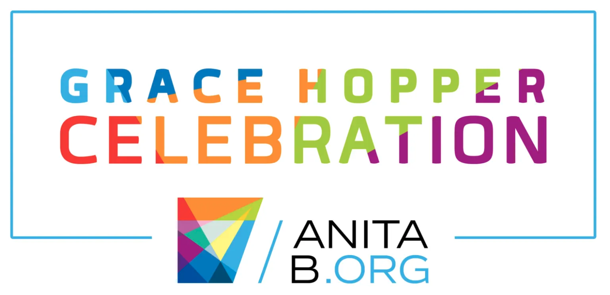
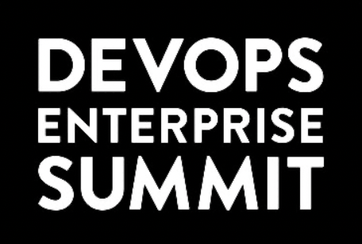

Mirella Batista
Systems thinker. People leader. AI practitioner.
I'm a systems thinker who turns complexity into clarity, translating hard technical problems into clear strategies tied to business outcomes, and delivering on them with disciplined execution. I lead teams with empathy and a product mindset, growing the people around me as intentionally as the products we build.
Wharton CTO Program
Graduate 2025
AWS AI Practitioner
Certified 2026
Speaker
SXSW · Grace Hopper · DevOps Enterprise Summit · LeadDev · Women Who Code
Women of Color in STEM, Technology All-Star Award
Recipient 2024
Leadership philosophy
Engineers are curiosity-driven. My job is to make sure that curiosity goes somewhere that matters.
Great engineers are curiosity-driven. They don't just build things. They're drawn to interesting problems, energized by complexity, and motivated by the chance to create something that matters.
The best engineering leaders understand this. My approach to leadership is built around creating environments where that curiosity thrives, where continuous growth and innovation aren't aspirational values on a wall but the actual texture of daily work. And where the team's energy is deliberately channeled toward the problems that will be most impactful for the business, the people solving them, and the customers they serve.
About this site
This site is one way I keep my hands on the tools. I designed and developed it co-creating with Claude and Claude Code, owning every architectural decision and reviewing every line. This reflects how I believe AI tools should be used in engineering: as a thinking partner that accelerates learning and execution, not a replacement for understanding.
Completion followed the Cloud Resume Challenge (AWS 2026 Version). It runs entirely on AWS: static assets on S3 behind CloudFront, a serverless visitor counter built on Lambda, DynamoDB, and API Gateway, and all infrastructure managed as code with Terraform. Every push deploys automatically through GitHub Actions using OIDC authentication, so no credentials are ever stored in the pipeline. More information in the Projects section.
From startups to enterprise
I'm an executive-level engineering leader whose career spans startups to global enterprise, across IoT, media, financial services, and technology. I've built, scaled, and operated enterprise and consumer products across web, mobile, and high-traffic ecosystems. I've led multi-disciplinary engineering organizations, modernized legacy systems, and established production-grade standards for reliable, compliant, scalable delivery.
I bring applied AI fluency across both strategy and practice. I partner closely with Product, Design, Security, and Business stakeholders, and I'm known for strong execution, systems thinking, and people-first leadership.
Chief of Staff & Technical Advisor to Global Head of Corporate Strategy
Serve as technical advisor and execution partner to the Global Head of Corporate Strategy, bringing engineering perspective to strategic initiatives while driving the organization's operating rhythm and execution discipline.
- Technical Advisor: Apply deep engineering expertise to advise the Global Head of Strategy on technical topics, including incident analysis, root cause assessments, and developer advocacy strategy. Co-develop high-priority strategy deliverables, including the Successful AI Execution Playbook, a client-facing framework guiding organizations through production-ready AI implementation based on IBM's internal use case experience.
- Operating Cadence & Execution Discipline: Own and evolve the organization's operating cadence, including planning, prioritization, execution tracking, and executive communications across complex, cross-cutting initiatives. Adapt agile practices for non-engineering teams to improve scoping and planning discipline, establishing structured forums that increase visibility, contribution, and accountability across project teams.
- Leadership Visibility: Introduce structured AMA sessions and recurring skip-level engagements to strengthen feedback loops and support leadership pipeline development.
- Executive Readiness: Prepare the Global Head of Strategy for external engagements and client-facing presentations by defining objectives, tailoring strategic narratives to audience context, and delivering executive-ready messaging.
Senior Technical Staff Member (STSM), CIO Software & Developer Experience
STSM is IBM's senior technical leadership rank, recognizing deep expertise and broad organizational impact across engineering. Led the IBM CIO Software & Developer Experience Advocacy Program supporting platforms used by ~250,000 employees, driving modernization, engineering standards, and large-scale enablement across UI platforms, internal products, and developer tooling.
- Strategic Coverage: Drove 100% coverage of strategic engineering priorities (application modernization, CI/CD, automation, AI adoption) within five months through structured, outcome-focused enablement.
- Stakeholder Alignment: Drove 100% coverage of strategic engineering priorities (application modernization, CI/CD, automation, AI adoption) within five months through structured, outcome-focused enablement.
- Developer Advocacy: Built and scaled a developer advocacy model that strengthened SME engagement and cross-platform adoption.
- Global Transformation: Enabled mainframe modernization at scale by upskilling 100 developers across five regions and supporting the migration of 42 applications within five months.
- Technical Strategy & Mentorship: Defined and published 30+ DevSecOps and SRE principles, mentoring 20–30 engineers and delivering technical workshops to audiences of up to 600.
Manager, CIO Mobile Engineering
Led mobile engineering for a high-traffic internal product, improving quality, performance, and delivery velocity.
- Strategic Hiring: Scaled the team by 50% through strategic hiring, achieving 100% two-year retention and strengthening organizational health.
- Accelerated Transformation: Modernized delivery by introducing DevOps and CI/CD practices, significantly increasing release frequency and system resilience.
- Improved Application Performance: Eliminated user-visible network errors, reduced mobile app screen flicker by 90% through intelligent caching, and strengthened QA practices to materially reduce defects.
VP, Head of Channel Integration, USCB Product Technology
Led UI engineering for high-scale consumer banking web and mobile platforms, managing ~60 engineers across five teams with full accountability for delivery, quality, and reliability.
- Platform Delivery: Delivered major consumer-facing capabilities across web and mobile platforms.
- Reduction in Development Time: Reduced time-to-market by 40% through micro-frontend architecture, incremental delivery, and modernization of UI systems.
- Business Impact: Partnered with Product and UX to launch self-service features that reduced call-center volume.
- Engineer Skillset Growth: Increased critical skill coverage by 80% during a hiring freeze through a scalable Learn-Do-Teach capability model.
- Organizational Resilience: Led teams through rapid organizational change during COVID while maintaining delivery focus and team stability.
Senior Software Engineer
Early engineer at iControl Networks, an IoT startup building consumer home-automation products that integrated hardware, mobile, and real-time systems and became part of Comcast's Xfinity Home platform.
- App Ecosystem: Designed and built 10 foundational consumer applications forming the core product ecosystem.
- Cross-Platform Development: Developed multi-brand, multi-language mobile applications deployed at scale.
- Technical Innovations: Engineered real-time UI systems supporting security events, video streaming, and device telemetry.
- Startup Growth: Contributed to product growth and platform maturity through rapid iteration in a startup environment.
Technical depth, leadership range, business focus
I bring technical depth, leadership range, and a focus on business outcomes. On the technical side I work across languages, cloud infrastructure, and applied AI tooling. On the human side I lead teams and align stakeholders. Throughout, I tie engineering decisions to measurable results and the business objectives they serve.
Languages
Frontend & Mobile
Cloud & Infrastructure
AI & Applied LLMs
Tooling & Version Control
Core strengths
From infrastructure to AI, built end to end
I build with AI as a thought partner, not an autopilot. These projects were developed using Claude and Claude Code. Every architectural decision was understood, every line of code reviewed, and every commit intentional. AI accelerates execution. Engineering judgment stays human.
Cloud · Infrastructure · Full Stack
Cloud Resume Challenge
www.mirellabatista.com is my production-grade personal portfolio site built on AWS. Features a serverless visitor counter, CI/CD pipeline with OIDC authentication, and infrastructure as code, deployed automatically to AWS from GitHub.
AI · ML · Python
AI/ML Mini Labs
A progressive series of hands-on AI/ML engineering labs, from local LLM inference and semantic search to LangChain RAG pipelines. Built with TDD throughout and designed as a public portfolio of applied AI skills.
Frontend · AWS
thejuliobatista.com
Personal portfolio site for actor and creative professional Julio Batista. Designed mobile-first with a bold visual identity, built on AWS with a serverless contact form backend and automated CI/CD deployment pipeline.
Driven by curiosity, grounded in rigor
I'm driven by curiosity and a conviction that good leaders never stop being students.
The programs and recognition below span engineering, AI, executive leadership, and responsible innovation, because I want to keep growing in every dimension of the work, and to model that growth for the teams I lead.
Recognition
- Women of Color in STEM Technology All-Star Award 2024
Professional Development
- AWS AI Practitioner 2026
- Wharton Executive Education, CTO Program 2025
- Responsible Innovation: Moving Fast and Building What Lasts, Stanford Continuing Studies 2025
- IBM Blue Core Coach
- Athena Leadership
- AWS Cloud Practitioner
- Ethical & Trustworthy AI, IBM
Education
- University of Puerto Rico
Conferences and talks
Speaking and mentoring is how I give back. Whether I'm on a main stage at SXSW or leading a session at LeadDev, I show up to share what I've learned, spark conversation, and make the technical community a little more open and accessible.
The Myth of the Ladder
I moderated a conversation with Cynthia Kleinbaum Milner on how women get ahead in their careers. We unpacked the glass cliff and the cost of opting out of opportunities before anyone else has a chance to. Honest, actionable, and a room that came ready to engage.
Does your org need platform engineering?
I joined a panel of engineering leaders to open the black box on platform engineering: what the approach looks like in practice, how it relates to developer happiness, and whether it really holds the key to productive teams. The goal was to help the audience leave knowing what platform engineering actually is and whether it's the right route for their org.
Trunk Based Development for Mobile Apps
I introduced trunk-based development and showed how mobile teams can use this workflow to achieve continuous integration and keep better control over their apps, even outside the deployment cycle. A well-attended virtual session on a branching strategy built for the realities of mobile, where you can't just push a fix at the press of a button.

Developer Experience and Enterprise IT Transformation
I co-presented the story of how IBM's CIO Developer Experience organization enabled developers with new ways of working, using community building and developer advocacy to break down silos and make sure developer feedback was heard and acted on. I shared how a focus on tools, processes, and people produced a measurable reduction in waste and steady improvement in our ability to deliver value across the enterprise.

Building the Tech Talent You Need to Succeed
I made the case that we can't simply hire all the software talent we need. With competition tight, salaries rising, and tools changing fast, I argued that businesses from startups to large enterprises have to shift focus away from hiring alone and invest in building talent from within, through inventive training and development that creates strong cultures and lets great people shape their own growth.
Reducing the Burden of Incident Response on Your Teams
On this panel of engineering leaders, I shared my experience introducing blameless postmortems to help teams keep a learning-from-mistakes culture and psychological safety. We made the case for shared responsibility over the blame game: that 3am outages shouldn't rest on one groggy person, and that transparency and teamwork build more reliable systems while easing the cognitive load on developers.
The impact offstage
My approach to public speaking extends beyond the stage. Here's what colleagues say about how I bring that same energy to building programs that teach, connect, and scale.
Accelerating z/OS Transformation: How "Learn. Do. Teach." Built a Global Community of Experts
A huge thank you to Mirella Batista, whose vision, leadership, and relentless execution turned this program into a repeatable, scalable model.
In Accelerating z/OS Transformation: How "Learn. Do. Teach." Built a Global Community of Experts, Rosalind Radcliffe writes about how the training program I designed (based on the Learn. Do. Teach. methodology) and executed allowed us to upskill 100 engineers across five regions and migrate 42 mainframe applications in five months. Built to modernize z/OS development in the IBM CIO's office, the program paired instructor-led workshops with hands-on migration work on each participant's own applications, then had participants teach what they learned to others. It produced reusable training material and grew into a self-sustaining community of practice as graduates stepped up to train the next wave.
Read the full article ↗Writing to understand
Writing is how I process and share what I've learned. Each of these articles was born from a real challenge I faced, a question I couldn't stop thinking about, or a lesson I wished someone had written down for me earlier. If even one of them saves you time, sparks an idea, or makes you feel less alone in what you're navigating, then it was worth putting into words.
How to Tell the Story of Your Achievements
Your professional story is one of your most powerful tools. This article explores how to recognize, track, and confidently share your accomplishments, and why telling your story matters especially for those underrepresented in tech.
Trunk Based Development for Mobile Apps
Mobile teams can't push fixes at the press of a button, so code quality has to be built in from the start. This article breaks down trunk-based development and feature flags as a practical branching strategy for mobile teams practicing continuous integration.
Find Them, Grow Them and Keep Them: Leading Technical Talent in the New Normal
Hiring freezes, skills shortages, and a post-pandemic workforce have changed what it means to lead technical talent. This article shares practical approaches to building trust, creating human connections, and growing the people on your team.
Learn. Do. Teach. An Innovative Approach to Solving a Skills Set Shortage
When faced with a skills shortage, a hiring freeze, and an aggressive timeline, a traditional solution was not an option. This article describes how a mentor-based, learn-do-teach training model doubled available skill sets in 30 days.
Transform Incidents Into Learning Opportunities with Blameless Postmortems
Production incidents are inevitable. What matters is how your team responds. This article makes the case for blameless postmortems as a tool for building psychological safety, improving processes, and turning failure into fuel for growth.
My 2025 book jar
I love to read. Give me a good book anytime, something to feed my curiosity or take me somewhere new. In 2025 I turned that into a small ritual: every time I finished a book, whether physical, Kindle, or audio, I made a miniature version of its cover and dropped it into a jar. By year's end the jar held 97 tiny books, a tangible record of a year of learning. I've since moved them to the holding jar in this photo and set the empty one once again on my desk for 2026, a reminder that there's always space for more.
Where I got the idea ↗Currently reading
I almost always have two or three books going at once, one physical, one on Kindle, and one in my ears. Fiction tends to be the one I tear through fastest.
- Dungeon Crawler Carl series Aliens turn Earth into a deadly dungeon crawl broadcast as an intergalactic reality show, and a regular guy and his ex's show cat have to survive it.
- AI Snake Oil A clear-eyed guide to telling real artificial intelligence from hype, separating what the technology can actually do from what's oversold.
- Quantum Computing for Everyone A plain-language introduction to how quantum computing works, written to make the core ideas accessible without heavy math.
Up next
- Apple in China A deeply reported account of how Apple built its manufacturing in China, and how that bet made the world's most valuable company dependent on, and shaped by, Beijing.
The best way to reach me is on LinkedIn. Whether you want to talk about a role, a collaboration, or just connect with a fellow technologist, I'd love to hear from you.
Connect on LinkedIn ↗I use Instagram to document my journey as a technologist, leader, and lifelong learner. From conferences and speaking events to the books I'm reading and the places I explore, it's the most personal window into who I am beyond the resume. Come follow along.
Follow on Instagram ↗